Dallas, Texas · Geospatial machine learning
Same city.
Different heat.
Finding the hotter pockets of Dallas, then asking what the landscape has to do with them.
An island stands out from what surrounds it. A desert can be hot across a huge area without having that contrast. Heat islands are about the difference. A pocket of city can run warmer than the neighborhoods around it, even when the whole city is having a very hot day.
The broader urban heat island effect compares a city with its outlying surroundings. Here I’m looking within Dallas. I want to find the places that are unusually hot for the same time of day, see whether the pattern lasts into the evening, and understand what the model picks up about those places.
Python · GeoPandas · Rasterio · XGBoost · Spatial validation · SHAP
Start with the data See the citywide predictions →01 / Follow the routes
One city through three parts of the day
On August 5, 2023, Dallas volunteers drove routes with temperature and humidity sensors. The files include 21,032 morning readings, 19,491 afternoon readings, and 19,517 evening readings. The city’s campaign summary describes how the survey was collected.
I average the readings within each 100 m cell, separately for each time period. That keeps a slow drive down one block from giving that block more influence just because the sensor collected more readings there. Each occupied cell gets one vote.

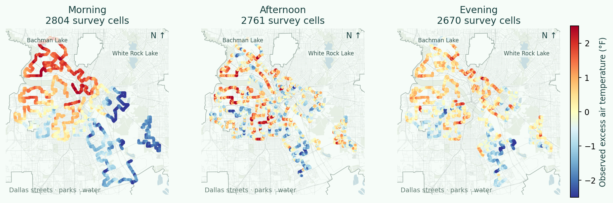
The afternoon is the hottest in absolute terms. The interesting question is whether the same places stand out in the morning or stay relatively warm in the evening. I fit separate models for each period so those patterns can differ.
Follow the unusually hot readings
Pick a time and move the cutoff. This view shows measured cell averages, rather than model predictions.
Loading the survey cells.
North is up. Roads and water are schematic context. Counts refer to sampled cells, rather than residents or the whole city.
02 / Define the thing to predict
Hot compared with what?
A temperature of 105°F means something different at 7 a.m. than at 3 p.m. My main target is excess air temperature in °F above the survey reference for that time of day. The reference is the average of the equally weighted surveyed cells. In the afternoon it is 105.3°F, so a cell at 106.3°F has an excess of +1°F.
Predicted heat excess = cell air temperature − period survey reference
I keep Fahrenheit because “one degree warmer” is easier to interpret than a standardized score. Subtracting the mean changes the reference point, rather than making the model more accurate. During validation, the reference comes only from the training cells.

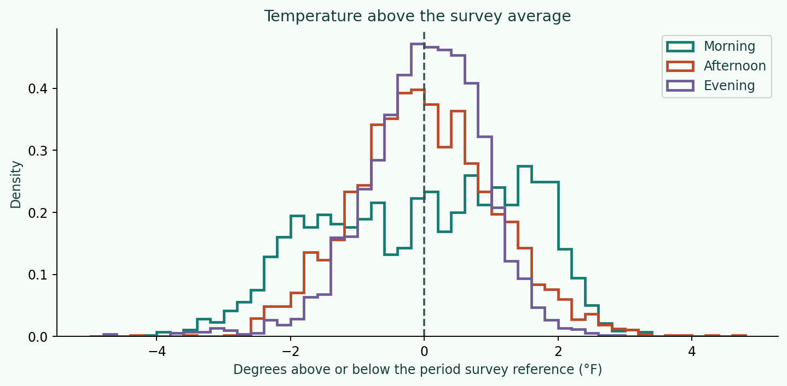

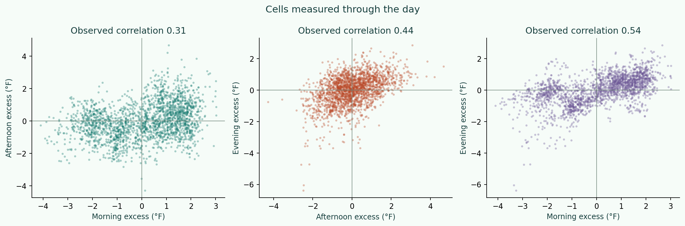
There are 2,114 cells measured in all three periods. The morning–afternoon correlation is 0.31, and the afternoon–evening correlation is 0.44. Those comparisons help separate places that stay relatively warm from places whose position changes through the day.
That finds broadly hot areas. To identify a smaller island within them, I add a second check after prediction. A candidate must sit in the hotter quarter of the survey temperature distribution and be at least 0.25°F warmer than the model’s surrounding 500–1,500 m ring. I group touching cells into patches of at least three cells.
The ring and contrast cutoff are explicit screening choices, rather than a universal scientific definition. The contrast is calculated from predicted environmental surfaces, so nearby measured temperatures never become hidden predictors. It is a way to compare places, rather than a probability that an island exists.
03 / Describe the surroundings
What does the model know about a place?
A thermometer tells me what happened. The other datasets give me a way to describe the landscape where it happened. I bring them onto the same 100 m grid before fitting the models.
- The survey supplies the target. Morning, afternoon, and evening air-temperature readings become one average per sampled cell and period. Humidity and heat index stay out of the predictors.
- Landsat describes the surface. Satellite bands provide vegetation and built-up signals, along with thermal brightness. NDVI compares near-infrared and red light to indicate vegetation. I summarize the landscape over roughly 210 m, 630 m, and 2.1 km windows, then compare the nearby landscape with the wider area.
- City layers describe the setting. Parks, lakes, and streams provide geometric distance features. The street network adds a proxy for how much of the nearby raster is crossed by roads.
- Block groups and market areas add neighborhood context. EJScreen contributes indicators such as traffic, fine-particle pollution, housing age, and population characteristics. Residential market polygons add housing and development indicators. These describe areas, rather than individual people.
How the sources become model features
I calibrate the Landsat bands from their metadata and mask cloud, shadow, snow, fill, and saturation flags. Missing measurements stay missing. Spatial joins attach neighborhood attributes, while distances use a projected map measured in meters. The same extraction runs at surveyed cells and citywide prediction cells.
The temperature campaign is from August 2023 and the supplied Landsat scene is from October 2023. The satellite features describe landscape conditions from that scene. Their thermal brightness is different from the survey’s air temperature and from a calibrated land-surface temperature product.

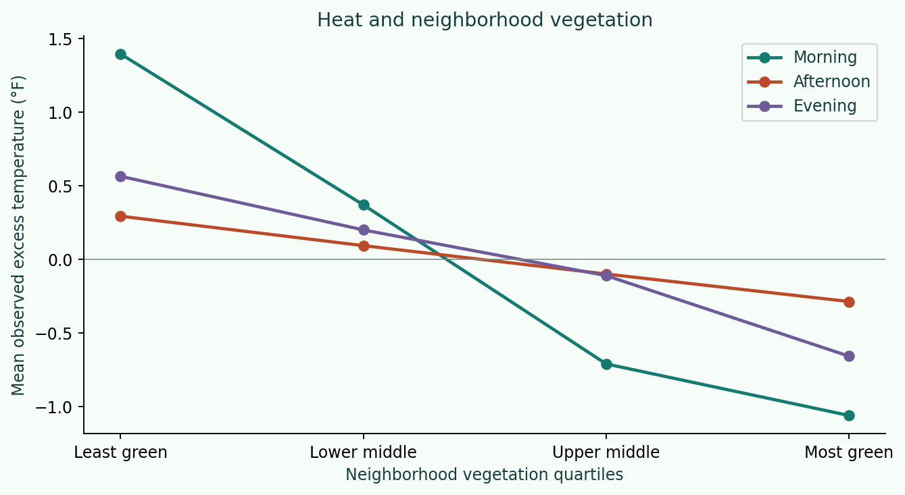
The vegetation pattern is much clearer in the morning. The least-green quarter averages about 2.46°F warmer than the greenest quarter, compared with about 0.58°F in the afternoon. That gives the model a clearer landscape signal early in the day and is one clue to the harder afternoon predictions. Vegetation can provide shade and cooling through evaporation, so faster warming in more exposed areas is a plausible part of the story. But these snapshots don’t tell me which places heated fastest. Morning differences could also reflect heat retained overnight. By afternoon, shifting building shade, wind, and surface materials may matter in ways a broad vegetation index misses. Those are explanations I would test with more detailed measurements.
04 / Make the test match the question
A small grid and a fair test do different jobs
The 100 m analysis grid decides how I summarize a place. The 1 km holdout blocks decide which places the model has to predict without seeing their temperatures. Those sizes do different jobs.
If I scatter neighboring cells between training and testing, the model can be tested just one street away from a location it already knows. Holding out whole blocks asks it to bridge a larger gap. I compare 100 m, 250 m, 500 m, 1 km, and 2 km blocks, shifting the grid as another check.

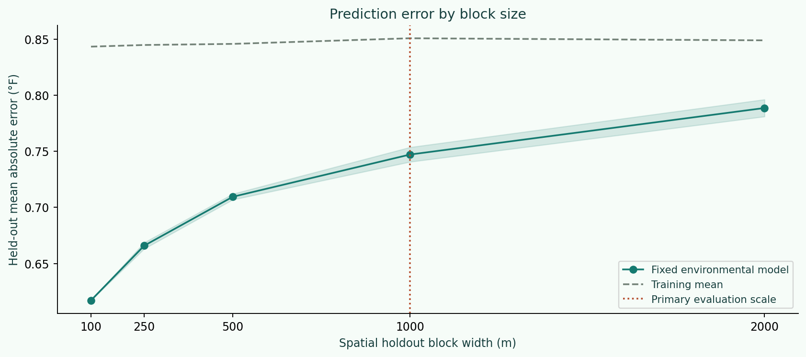
In this cell-based afternoon test, the median distance to a training cell is 100 m with the smallest blocks and about 316 m with 1 km blocks. With 2 km blocks it is roughly 540–580 m. The scores answer increasingly difficult versions of “predict somewhere else.”
I use 1 km blocks as the main test. Earlier held-out residual checks showed nearby errors becoming much less similar over several hundred meters. One kilometre is a conservative working scale above that distance, while 2 km remains a harder check. It is a practical analysis choice, rather than the block size picked for the best score.
A cell can still lie close to the edge of a held-out block, so block width is different from guaranteed separation. I also test larger north–south regions with a 500 m buffer between training and test locations.
05 / Compare predictions with observations
Can the landscape help find the hotter cells?
I fit XGBoost models separately for morning, afternoon, and evening. Within each training split, three inner spatial folds compare landscape-only and combined features with different tree depths. Five outer folds test the chosen models on held-out blocks. I repeat that process with a shifted grid.
The simplest baseline predicts the training-period average everywhere. It knows the time of day, but nothing about the location. A nearby-temperature interpolation is a second benchmark inside the survey area. For the citywide map, I use the environmental model, which can work from landscape features alone.

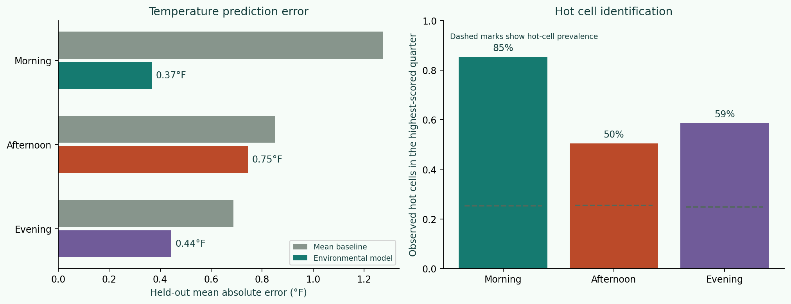
| Period | Survey cells | Reference | Baseline error | Model error | R² |
|---|---|---|---|---|---|
| Morning | 2,804 | 86.1°F | 1.27°F | 0.37°F | 0.89 |
| Afternoon | 2,761 | 105.3°F | 0.85°F | 0.75°F | 0.21 |
| Evening | 2,670 | 102.4°F | 0.69°F | 0.44°F | 0.56 |
The morning pattern is the clearest of the three. Its model has an average error of 0.37°F versus 1.27°F for the baseline, with R² of 0.89. Its highest-scored quarter contains 85% observed hot cells. The morning model also beats its baseline in the buffered regional test, at 0.60°F versus 1.48°F.
For the afternoon, average absolute error is 0.75°F, compared with 0.85°F for the baseline. That is about 12% less error. Of the model’s highest-scored quarter of afternoon cells, 50% are observed hot cells, compared with a hot-cell prevalence of 25%.
The shifted-grid afternoon error is 0.72°F. On the separate buffered-region test, afternoon error is 0.87°F versus 0.86°F for its baseline. Citywide predictions remain exploratory in places beyond the survey. These experiments use one campaign day and are not an independent test on a new day. The supplied readings have no route timestamps, so collection conditions cannot be fully separated from geography.
06 / Put the predictions on the city
From the sampled streets to Dallas
I apply the environmental models to land cells across the Dallas city boundary. The left map shows the full prediction surface. The right keeps cells with valid vegetation data, familiar model-feature combinations, and a survey cell within 1 km. Grey areas still have predictions on the left, but do not pass that support screen.

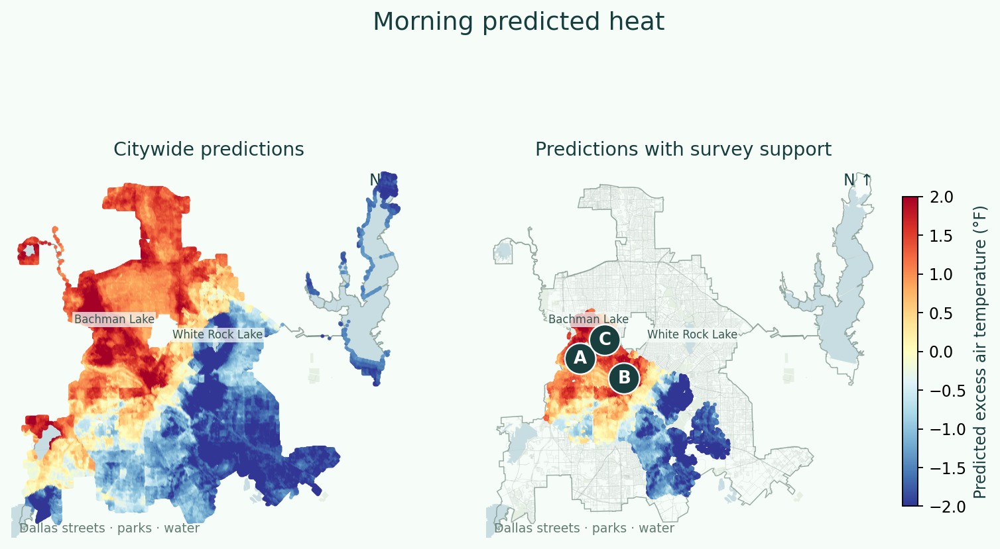
The screening rule identifies 45 connected morning candidate patches. The lettered examples are the highest-ranked patches that are at least 2 km apart, ranked by mean heat excess plus local contrast.
Island A
+2.26°F relative to the morning survey reference
+0.58°F average contrast with the surrounding ring
3.01 km² across 301 connected analysis cells
A surveyed cell 100 m from the example recorded +2.99°F excess. Its held-out prediction was +1.98°F.
Island B
+2.22°F relative to the morning survey reference
+0.58°F average contrast with the surrounding ring
2.42 km² across 242 connected analysis cells
The example cell was surveyed and recorded +2.89°F excess. Its held-out prediction was +2.22°F.
Island C
+2.13°F relative to the morning survey reference
+0.44°F average contrast with the surrounding ring
1.03 km² across 103 connected analysis cells
The example cell was surveyed and recorded +2.89°F excess. Its held-out prediction was +1.77°F.

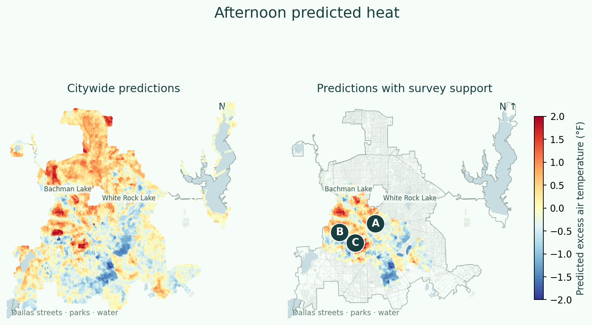
The screening rule identifies 43 connected afternoon candidate patches. The lettered examples are the highest-ranked patches that are at least 2 km apart, ranked by mean heat excess plus local contrast.
Island A
+1.67°F relative to the afternoon survey reference
+1.64°F average contrast with the surrounding ring
0.09 km² across 9 connected analysis cells
The example cell was surveyed and recorded +2.79°F excess. Its held-out prediction was -0.04°F.
Island B
+1.61°F relative to the afternoon survey reference
+1.09°F average contrast with the surrounding ring
2.71 km² across 271 connected analysis cells
The example cell was surveyed and recorded +3.12°F excess. Its held-out prediction was +2.09°F.
Island C
+1.26°F relative to the afternoon survey reference
+0.96°F average contrast with the surrounding ring
0.93 km² across 93 connected analysis cells
The example cell was surveyed and recorded +3.00°F excess. Its held-out prediction was +0.23°F.

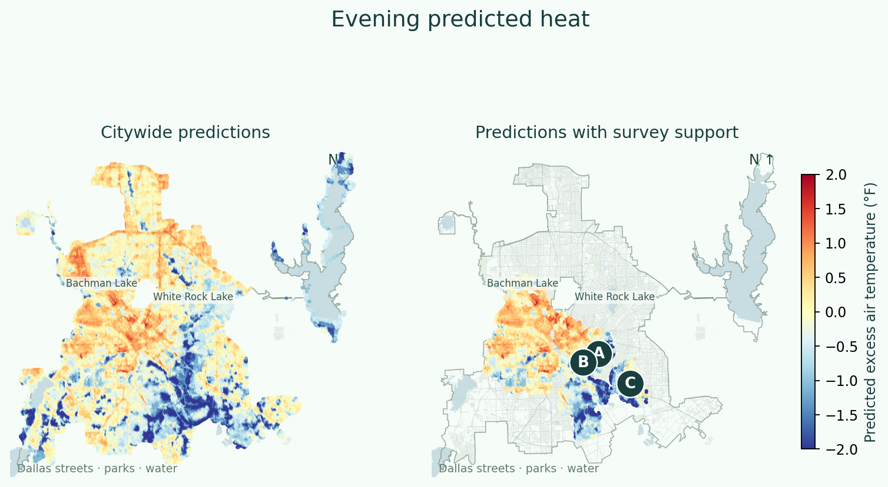
The screening rule identifies 82 connected evening candidate patches. The lettered examples are the highest-ranked patches that are at least 2 km apart, ranked by mean heat excess plus local contrast.
Island A
+1.25°F relative to the evening survey reference
+1.89°F average contrast with the surrounding ring
0.10 km² across 10 connected analysis cells
The example cell was surveyed and recorded +1.79°F excess. Its held-out prediction was +0.67°F.
Island B
+0.91°F relative to the evening survey reference
+1.38°F average contrast with the surrounding ring
0.24 km² across 24 connected analysis cells
The example cell was surveyed and recorded +1.47°F excess. Its held-out prediction was +0.74°F.
Island C
+0.91°F relative to the evening survey reference
+1.18°F average contrast with the surrounding ring
0.18 km² across 18 connected analysis cells
The example cell was surveyed and recorded +1.98°F excess. Its held-out prediction was +0.60°F.
The model predicts survey-relative heat under the campaign-day setup, rather than a current forecast. The citywide average is not forced to zero. The support screen is a diagnostic, not a calibrated confidence interval. At least half of a candidate’s surrounding ring must pass the screen, but all valid ring cells contribute to the contrast. Open water and missing vegetation cells are excluded from the heat-island search.
07 / Open up the prediction
What makes a predicted island stand out?
SHAP breaks a prediction into feature contributions. In these charts, points to the right push predicted excess heat upward. Red points have higher feature values and blue points have lower values. This shows both the size and direction of the model’s associations.

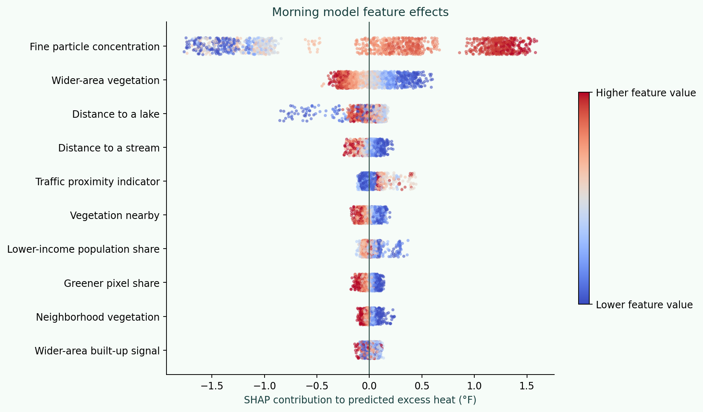
The morning model associates higher fine particle concentration, lower wider-area vegetation and shorter distance to a stream with warmer contributions on average. This compares the upper and lower feature-value quarters in the explanation sample, rather than estimating what would happen if I changed one feature in place.

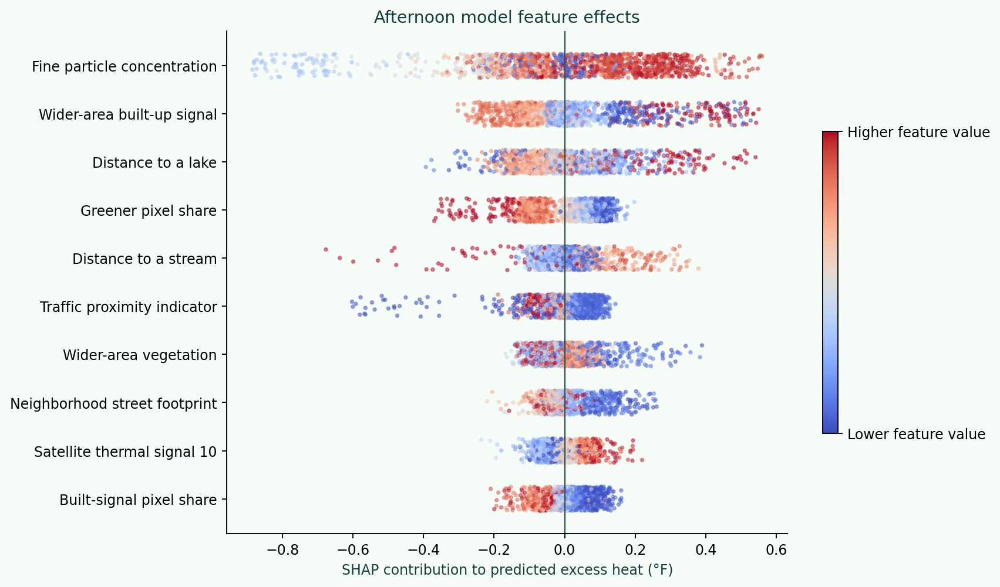
The afternoon model associates higher fine particle concentration, lower wider-area built-up signal and lower greener pixel share with warmer contributions on average. This compares the upper and lower feature-value quarters in the explanation sample, rather than estimating what would happen if I changed one feature in place.

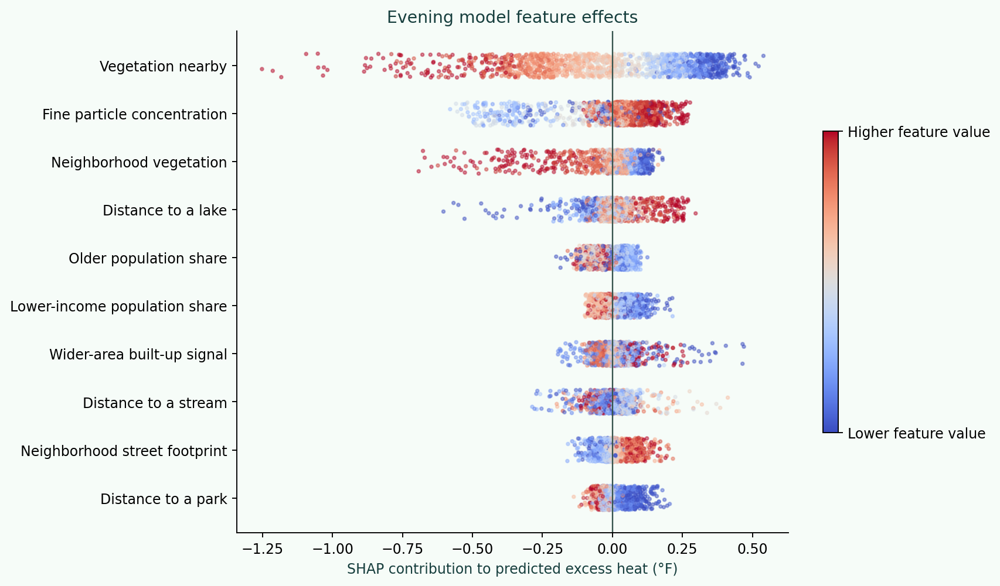
The evening model associates lower vegetation nearby, higher fine particle concentration and lower neighborhood vegetation with warmer contributions on average. This compares the upper and lower feature-value quarters in the explanation sample, rather than estimating what would happen if I changed one feature in place.
| Feature | What it describes |
|---|---|
| Fine particle concentration | An area-level estimate of fine-particle pollution. It can also distinguish different urban settings. |
| Wider-area vegetation | A satellite vegetation signal. Higher values generally indicate more vegetation at the stated scale. |
| Distance to a lake | Straight-line distance to the nearest mapped lake polygon. |
| Distance to a stream | Straight-line distance to the nearest mapped stream. |
| Traffic proximity indicator | An area-level indicator of nearby traffic and road activity. |
| Vegetation nearby | A satellite vegetation signal. Higher values generally indicate more vegetation at the stated scale. |
| Lower-income population share | The area population share classified as lower income in EJScreen. |
| Greener pixel share | The share of neighborhood pixels whose vegetation index exceeds the stated greener-pixel threshold. |
| Feature | What it describes |
|---|---|
| Fine particle concentration | An area-level estimate of fine-particle pollution. It can also distinguish different urban settings. |
| Wider-area built-up signal | A satellite built-up signal. It can also respond to bare soil, rather than identifying pavement alone. |
| Distance to a lake | Straight-line distance to the nearest mapped lake polygon. |
| Greener pixel share | The share of neighborhood pixels whose vegetation index exceeds the stated greener-pixel threshold. |
| Distance to a stream | Straight-line distance to the nearest mapped stream. |
| Traffic proximity indicator | An area-level indicator of nearby traffic and road activity. |
| Wider-area vegetation | A satellite vegetation signal. Higher values generally indicate more vegetation at the stated scale. |
| Neighborhood street footprint | The fraction of nearby raster pixels crossed by mapped streets, used as a street-network proxy. |
| Feature | What it describes |
|---|---|
| Vegetation nearby | A satellite vegetation signal. Higher values generally indicate more vegetation at the stated scale. |
| Fine particle concentration | An area-level estimate of fine-particle pollution. It can also distinguish different urban settings. |
| Neighborhood vegetation | A satellite vegetation signal. Higher values generally indicate more vegetation at the stated scale. |
| Distance to a lake | Straight-line distance to the nearest mapped lake polygon. |
| Older population share | The area population share age 65 or older. |
| Lower-income population share | The area population share classified as lower income in EJScreen. |
| Wider-area built-up signal | A satellite built-up signal. It can also respond to bare soil, rather than identifying pavement alone. |
| Distance to a stream | Straight-line distance to the nearest mapped stream. |
A closer look at the lettered islands
Here I explain one representative cell in each lettered patch against the model’s surrounding ring. A positive bar helps explain why that cell is predicted warmer than the ring. A negative bar offsets that contrast. All feature contributions, including those outside the six shown, add up to the model’s local contrast.

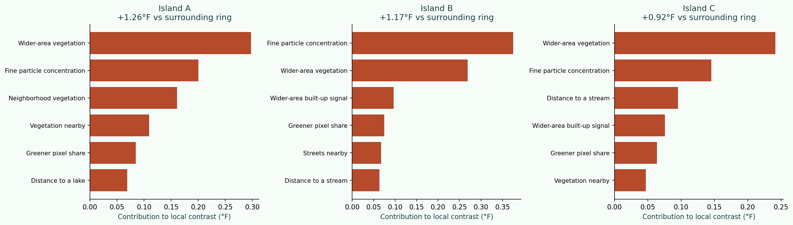
Island A is a useful example of how the features combine. The largest positive contributions shown include wider-area vegetation (+0.30°F) and fine particle concentration (+0.20°F). These describe what separates the modeled cell from its surrounding ring.
Island B is a useful example of how the features combine. The largest positive contributions shown include fine particle concentration (+0.37°F) and wider-area vegetation (+0.27°F). These describe what separates the modeled cell from its surrounding ring.
Island C is a useful example of how the features combine. The largest positive contributions shown include wider-area vegetation (+0.24°F) and fine particle concentration (+0.15°F). These describe what separates the modeled cell from its surrounding ring.

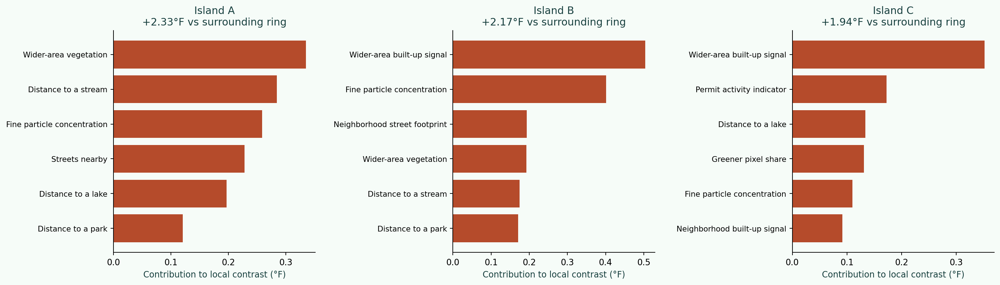
Island A is a useful example of how the features combine. The largest positive contributions shown include wider-area vegetation (+0.33°F) and distance to a stream (+0.28°F). These describe what separates the modeled cell from its surrounding ring.
Island B is a useful example of how the features combine. The largest positive contributions shown include wider-area built-up signal (+0.50°F) and fine particle concentration (+0.40°F). These describe what separates the modeled cell from its surrounding ring.
Island C is a useful example of how the features combine. The largest positive contributions shown include wider-area built-up signal (+0.35°F) and permit activity indicator (+0.17°F). These describe what separates the modeled cell from its surrounding ring.

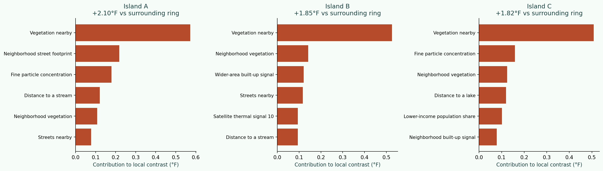
Island A is a useful example of how the features combine. The largest positive contributions shown include vegetation nearby (+0.57°F) and neighborhood street footprint (+0.22°F). These describe what separates the modeled cell from its surrounding ring.
Island B is a useful example of how the features combine. The largest positive contributions shown include vegetation nearby (+0.53°F) and neighborhood vegetation (+0.14°F). These describe what separates the modeled cell from its surrounding ring.
Island C is a useful example of how the features combine. The largest positive contributions shown include vegetation nearby (+0.51°F) and fine particle concentration (+0.16°F). These describe what separates the modeled cell from its surrounding ring.
This is where I would begin a closer investigation. I can identify a warmer pocket, quantify its predicted contrast, and see which landscape and neighborhood features the model uses to distinguish it. The next question is whether those associations hold on another hot day and what a visit to that place adds to the picture.
SHAP describes the prediction, rather than proving that pollution, housing age, or any one feature causes heat. Block-group indicators can act as location proxies. The named patches are candidates for follow-up, rather than estimates of how much a tree-planting or planning intervention would cool them.
Explore the project
Original analytical data assembled as of fall 2024. The analysis uses the August 2023 Dallas heat campaign, the supplied October 2023 Landsat scene, and the accompanying neighborhood and city layers. City-boundary map context was retrieved in October 2026.